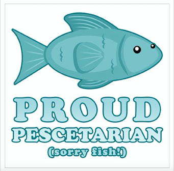
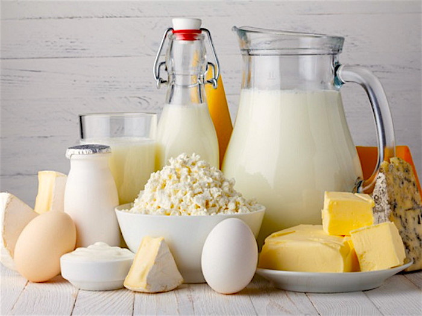
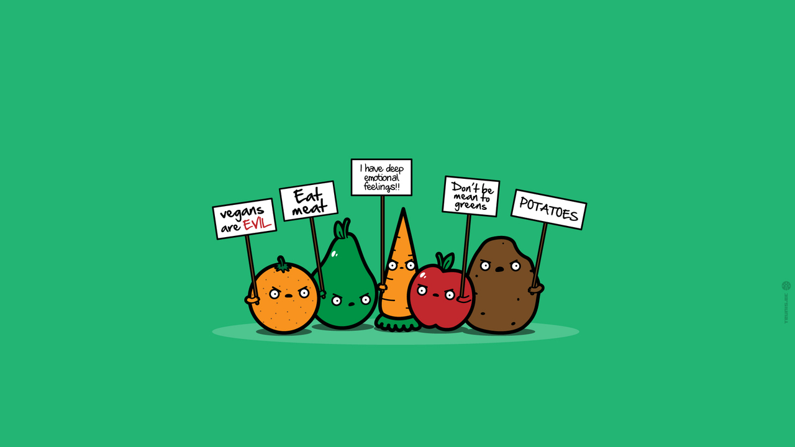

Chuyện ăn chay¶
Nguồn bài viết
Cứ nghe đến ăn chay là đa số chúng ta sẽ nghĩ đến mùng 1 hoặc ngày Rằm. Phần lớn người Việt Nam, theo như mình biết, ăn chay như một hình thức để thể hiện niềm tin vào Đức Phật. Khi muốn điều lành hay ước nguyện thành sự thật, người ta ăn chay như một cách để thể chứng tỏ lòng thành của mình. Nhưng dù vì tôn giáo, sức khoẻ hay vì bảo vệ động vật thì tinh thần đó đều rất đáng được trân trọng và truyền bá.
Theo mình, việc ăn chay khá là thú vị. Thứ nhất, có nhiều hình thức ăn chay khác nhau và nhiều nguyên nhân khác nhau dẫn đến quyết định ăn chay của một người. Có lẽ chúng ta đều biết việc ăn chay mang lại những lợi ích to lớn cho sức khoẻ, những món chay lành tính giúp thanh lọc cơ thể, giảm nguy cơ tim mạch, béo phì và tiểu đường. Hơn thế nữa nó giúp chúng ta bảo vệ làn da, khoẻ mạnh từ bên trong và giữ gìn vóc dáng.
Rau củ - một phần không thể thiếu trong bữa ăn hằng ngày, nhưng liệu chúng ta chỉ có thể ăn toàn rau?
Nếu bạn lo lắng ăn chay không đủ chất thì bạn nên biết rằng, nguồn đạm trong thực vật có thể có thể cạnh tranh với đạm động vật (trong thịt, trứng, sữa). Một số thực vật giàu đạm có thể kể đến như các loại đậu, đặc biệt là đậu nành và các sản phẩm từ đậu nành (đậu khuôn, tào phớ, sữa đậu...), các loại rau có màu xanh đậm, hạt mè, hướng dương... Thực vật hoàn toàn có thể đáp ứng nhu cầu dinh dưỡng của chúng ta từ chất xơ, đạm, các axit béo (ALA, APA, DHA) đến vitamin và các chất chống oxi hoá khác nếu chúng ta biết kết hợp và chế biến chúng một cách khoa học.
Có rất nhiều hình thức ăn chay đa dạng và linh động để phù hợp với từng người, và dưới đây là một số kiểu ăn chay mà mình biết:
Đầu tiên là Flexitarian - ăn chay bán phần, cũng được biết đến như Semi-vegetarian hay Partime vegetarian. Flexitarians - người ăn chay linh hoạt tuân theo chế độ ăn với chủ yếu là rau củ nhưng vẫn có thể ăn thịt gia cầm, cá, trứng và các sản phẩm từ sữa. Một số người thuộc loại này còn không ăn các loại thịt đỏ như bò, cừu...

Thứ hai, Pescatarian - không ăn tất cả các loại thịt, trừ cá. Một số người chọn cho thêm cá vào khẩu phần ăn chay của mình để giữ gìn sức khoẻ bằng cả chế độ ăn với nền tảng thực vật cộng thêm các chất dinh dưỡng lấy từ cá và hải sản. Loại này có thể ít phổ biến hơn nhưng số lượng Pescatarians đang ngày một tăng vì các lợi ích cho sức khoẻ mà nó mang lại (cá chứa rất nhiều dưỡng chất, bao gồm Omega 3, EPA, DHA, protein, vitamin B12, kẽm, selen...), hoặc dành cho những người muốn lấy đó làm bước đệm cho chế độ ăn chay toàn phần.
Tiếp đến là Lacto-ovo-vegetarian - ăn chay có trứng và sữa. Đây là loại mà phần lớn mọi người nghĩ đến khi nhắc tới vegetarian - ăn chay, cũng đồng thời là hình thức ăn chay phổ biến nhất. Người ta không ăn tất cả các loại thịt, cá, gia cầm, động vật có vỏ như tôm, cua, ốc.. nhưng ăn trứng và các sản phẩm từ sữa. Loại này còn được chia làm hai nhánh nhỏ hơn đó là Lacto-vegetarian - không ăn trứng nhưng ăn bơ, sữa, phô mai, sữa chua... và ngược lại là Ovo-vegetarian - ăn chay chỉ có thêm trứng mà không dùng thêm các chế phẩm sữa.

Trứng và các sản phẩm từ sữa
Một bộ phận lớn của ăn chay mà mình muốn nhắc đến nữa đó là vegan - ăn chay thuần. Người thuộc loại này không ăn bất kì loại thịt nào, đồng thời cũng nói không với trứng, các sản phẩm từ sữa và thực phẩm có nguồn gốc từ động vật, ví dụ như gelatin (khác với vegetarians).
Vegans còn không sử dụng những loại thức ăn tuy không phải thịt ở thành phẩm nhưng lại chứa các sản phẩm từ động vật trong quy trình chế biến- tức nguyên liệu không thuần chay. Có thể kể đến như đường mía hoặc rượu vang (đường được làm trắng bằng carbon hoạt tính có nguồn gốc động vật như than xương..., còn rượu vang dùng casein (protein từ sữa) hoặc lòng trắng trứng trong quy trình gạn lọc). Một số người còn cân nhắc về việc sử dụng mật ong (riêng mình thấy sữa và mật ong cùng loại với nhau).

Aww, isn't it cute >
Và loại cuối cùng mình muốn nhắc đến là Raw vegan - ăn chay thô hay ăn chay tươi. Thực phẩm đều ở trạng thái tự nhiên, tức là trái cây tươi, rau, rong biển, ngũ cốc, các loại hạt và đậu được ăn sống hoặc chế biến không quá 46 độ C. “Raw foodists” - người ăn chay tươi tin rằng thức ăn nấu trên mức nhiệt này sẽ mất đi phần lớn dưỡng chất hoặc thậm chí có hại cho sức khoẻ.

Từ bỏ thịt có lẽ là một lựa chọn rất khó với phần lớn mọi người hiện nay khi đâu đâu cũng là các món ăn mặn hấp dẫn. Con người là động vật ăn tạp nên thịt luôn là một phần không thể thiếu trong thói quen ăn uống, nếp sống và văn hoá của chúng ta.
Chúng ta lên án việc sử dụng thịt chó nhưng vì sao vẫn ăn các loại thịt khác? Tất cả các loại động vật mà ta ăn đều bị giết mổ một cách rất tàn nhẫn, kể như cắt tiết gà, vịt hay đập đầu cá, lợn... Việc loại bỏ hoàn toàn thịt ra khỏi bữa ăn có thể coi như hơi bất khả thi với nhiều người nhưng chúng ta vẫn có thể bớt giảm, chọn các kiểu ăn chay linh hoạt như trên hoặc đơn giản như thỉnh thoảng ăn chay như các bà, các mẹ...
Ăn nhiều rau củ giúp ta không còn nóng trong người, theo mình nghĩ, nó còn làm tâm tính chúng ta trở nên hiền hoà hơn hơn, vì ăn chay không những thanh lọc cơ thể mà còn giúp thanh lọc tâm hồn.
Một chút về chuyện ăn chay của mình, mình chỉ có thể thỉnh thoảng ăn chay vì trước đây gia đình mình không có ai ăn chay cả. Trong một bữa ăn chung mình không thể chỉ chọn toàn rau nếu không muốn bị thiếu chất và mệt mỏi. Việc chọn và kết hợp các món ăn chay trong bữa ăn hằng ngày sẽ rất khó khi quanh chúng ta toàn người ăn mặn, và không phải ai cũng có thời gian để tự nấu cho mình. Nhưng khi đã ăn chay mình cảm thấy khá vui vẻ vì ít nhất đã làm được một việc tốt cho sức khỏe khi xung quanh đầy rẫy những loại thức ăn mặn dầu mỡ hoặc độc hại. Mình còn cách ăn chay trường rất xa nhưng khi ăn thịt, nếu mình tưởng tượng đến cảnh con vật ấy bị giết mổ thì chắc hẳn sẽ cảm thấy ít ngon miệng hơn phần nào.
Nếu bạn lo ngại ăn chay sẽ gây "chán" thì các món chay hiện nay được chế biến một cách tinh tế và hết sức ngon miệng, ngon mắt. Chúng ta có chocolate, rượu vang, bơ... cho người ăn chay. Món bánh Oreos, Hershey’s Chocolate Syrup, bánh Ritz Crackers... cũng phù hợp với người ăn chay vì không có thành phần từ động vật. Các quán ăn, nhà hàng chay cũng xuất hiện nhiều khiến cho việc ăn chay càng trở nên dễ dàng.

Burger chay với phần nhân trông giống thịt nhưng lại được làm từ quả mít!
Có rất nhiều cách để trở nên khoẻ mạnh chứ không nhất thiết rằng bạn phải ăn chay. Bạn nên chọn những thứ phù hợp nhất với mình hoặc những điều mà khi làm có thể khiến bản thân bạn thoải mái. Nhưng ăn chay luôn là một cách tốt để thử thách sự kiên trì và khả năng vượt qua cám dỗ của bản thân!
Cơm nóng, thân!